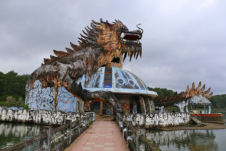
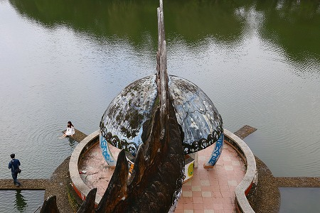

フエでの最後の訪問は巨大な龍の廃墟である。
かつての遊園地だかテーマパークの廃墟がかなり香ばしいことになっているとの噂を聞きつけ行ってみることにした。
現場は大きな池を中心にしたところで、勿論廃墟なので誰も管理してない…
と思ったら入り口のゲートに人がいて料金を徴収しているぞ！
ちなみに入り口のゲートもボロボロに崩れているし、その中にいる人も廃墟みたいにボロボロの恰好をしていた。
これはあれか、つまり地元の人が勝手に居座って入場料を徴収しているパターンか？
まあ、それで何らかのトラブルが回避されるならいっか、と思い幾ばくかの金を渡して「入場」した。
これまで色んな廃墟にも行ってきたが、金払って入る廃墟なんて初めてだぞ！
てなわけで廃遊園地である。
池を囲むようにいくつかの遊具などが点在していた。
その中でもキング級に目を惹くのがこちら↓

池の上に浮かぶ巨大なドラゴンである。
ドーム状の建物の上に巨大な龍が覆いかぶさっている。
おおお、これは廃墟好きのみならず巨像好きにも堪えられない物件ではありませぬか！
巨大龍へは橋が架かっている。
もちろん渡らせていただきますよ。入場料も払ってるんですから！

近づくと荒んだ感じが明らかになってくる。
湿気の多いベトナムではメインテナンスをしないとあっという間に黒ずんでしまうのだ。
顔のアップ。
ってアレ？口の下に人影が見える！
そうか、廃墟だけど居るのは我々だけではないのか。
辺りを伺うと他にも数組のグループがいるようだ。彼らも入場料払って来たのかなあ。
で、ドーム状の建物に到着。
描き込んでありますねー。
この辺は日本もベトナムも変わりないんですねー。
円形のカウンターはかつてはドリンクやお菓子を販売していたのだろうか。それともチケットカウンターかな。

ドームの隣には小さいドーム型の建物が続く。
その先には池が見える。
龍の尻尾の部分。裏側はこんな感じ。
リアルに骨が作ってある。
さらに中を覗き込むと内臓なのか、タコなのかぐにゃぐにゃしたオブジェが天井から吊るされていた。
わんこ先輩がこっちこっちと案内してくれているようなので中に入ってみる。
おじゃましますよ。
ジョーズ的なゲートを潜りさらに先へ。
どうやら小規模の水族館があったようですな。
壁面には延々とレリーフが続く。
閻魔さまの裁きなのだろうか。こんなところで地獄の光景に出会えるとは思わなかったのでチョット得した感じ。
龍の裏側。
こちらからも橋が対岸まで架かっている。
再び内部へ。丁度龍の背中から頭に向かっている。
ここもまた胎内を惹起させるような背骨っぽいインテリアになっている。
螺旋階段が見えてきた。
丁度頭の直下のようだ。
そうか、さっきカップルがいたのはココだったのだな。
先ほど渡ってきた橋が見える。
さらに階段を上って龍の口の中へ。

先ほど訪れた尻尾の先の小さなドームが小さく見える。
あれあれ、女の子が足を水に浸しちゃっているよ。
そんなに綺麗な水じゃなかったけどなー。
見れば脇でカメラ小僧が必死にシャッターを切っている。
何か日本もベトナムも大して変わんねえな。
しばらく池を眺めていると白人の二人組がやってきた。
フエの市内からバイクを借りて来たという。
入場料取られたか？、と聞いたらそんなところは通らなかったという。
バイクだったら他の道があったのだろうか。何か悔しいぞ。
ここでも結婚記念の撮影が行われていた。
結婚記念の撮影を廃墟でやるってどうなの？とも思ったがこの近所では一番フォトジェニックなスポットなのかも知れないですねえ。
こんなですもの。
次へＧＯＧＯＧＯ！